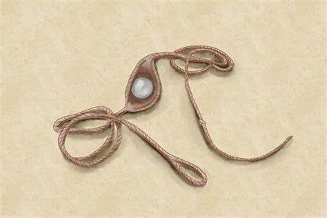
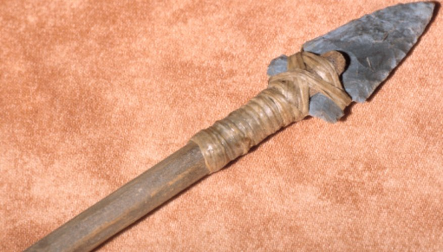

Prehistoric and Ancient/Tribal Weaponry |
Back | Home | Next | |
SlingThe Sling was a missle-based weapon, designed to throw pebbles and rocks at enemies. A famous depiction of this was David verus Goliath in the Bible, where David killed Goliath with a pebble to the head, showing how powerful these weapons are. In fact, people in modern times have followed written or drawn instructions from the past and tested them, showing that rocks could easily be thrown at 100-120 miles per hour. However, this weapon required lots of training and time to master. However, when mastered, it is an extremely deadly weapon as it generally has a larger range, more power than the bow and does not need much accuracy to deal a fatal blow. SpearSpears were invented in Africa, 500000 years ago for hunting and warfare. The design of these weapons consisted a sharp and pointy head, tied to the end of a long wooden shaft. They were used for thrusting and throwing but some designs later on also allowed them to cut. BowThe first bow was invented in Africa 71000 years ago, around the same time of the final offensive by Homo Sapiens to counterattack the Neanderthals, and eliminating them, making them extinct. A bow allows a much less trained and skilled person to use a missle-based weapon, the bow, unlike the sling. When compared against a sling, a bow is generally more accurate, but a skilled slinger can have the accuracy of an archer. The bow also relies quite heavily on accuracy as it needs to be precise to achive a fatal shot. |
  | |||